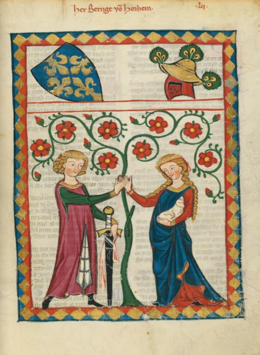

paragraph

Codex Manasse, page 178r, ca. 1304

Marsilio Cassotti and his wife Faustina, Lorenzo Lotto, 1523
Codex Manasse, page 178r, ca. 1304
Marsilio Cassotti and his wife Faustina, Lorenzo Lotto, 1523
paragraph
Scene of Lancelot's seduction from the Life of Lancelot du Lac, ca. 1401-1425
Two Lovers, Giulio Romano, 1524-1525
paragraph